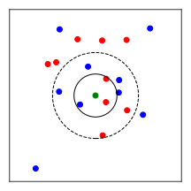

Klausurvorbereitung
Die folgenden Aufgaben sollen Ihnen dabei helfen, sich auf die Klausur vorzubereiten. Die Aufgaben sind so gewählt, dass sie den Prüfungsfragen ähneln und Themen aus den Übungen und Vorlesungen abdecken.
Aufgabe 1: Code-Snippets
Wählen Sie für die folgenden Code-Snippets die erwartete Ausgabe aus.
| a) | b) | c) |
|---|---|---|
| | |
☐ 3 | ☐ 98.01 | ☐ [[1], [2], [3, 4]] |
☐ 6 | ☐ 81 | ☐ [[1], [2], [3], [4]] |
☐ 9 | ☐ -81 | ☐ [[0], [1], [2], [3, 4]] |
☐ Error | ☐ 100 | ☐ Error |
Aufgabe 2: Euler-Verfahren
In der folgenden Implementierung des Euler-Verfahrens haben sich fünf Fehler eingeschlichen. Finden Sie die Fehler und korrigieren Sie diese. Nehmen Sie dabei an, dass alle benötigten Module importiert wurden.
def dydx(x: float, y: float) -> float:
k = 0.0039022970
return -k * y
def euler_step(
x_n: float,
y_n: float,
h: float,
dydx: Callable[[float, float], float],
) -> float:
return x_n + h * dydx(x_n, y_n)
def euler_method(
x0: float,
y0: float,
h: float,
dydx: Callable[[float, float], float],
nsteps: int,
) -> np.ndarray:
x = x0 * np.arange(0, nsteps) * h
y = np.zeros(nsteps + 1)
y[1] = y0
for i in range(0, nsteps):
y[i] = euler_step(x[i], y[i], h, dydx)
return x, y
Aufgabe 3: -Nearest Neighbors
Der -Nearest Neighbors (KNN) Algorithmus ist ein einfacher Algorithmus für Klassifikationsprobleme, der aber auch für Regressionsprobleme verwendet werden kann. Er ist ein parameterfreier Algorithmus, das bedeutet, dass er keine Trainingsphase hat.
Für einen gegebenen Punkt sagt der KNN-Algorithmus die Klasse voraus, indem die nächsten Nachbarn von im Trainingsdatensatz basierend auf ihrer euklidischen Distanz zu bestimmt werden. Die Klasse von ist dann diejenige Klasse, die unter den nächsten Nachbarn am häufigsten vorkommt. Dies ist im folgenden Bild für zwei Klassen veranschaulicht, wobei für (innerer schwarzer Kreis) die Klasse des grünen Punktes als rot vorhergesagt wird.

(a)
Welche Werte für sind mehr oder weniger sinnvoll, wenn die Anzahl der Klassen zwei ist? Begründen Sie Ihre Antwort.
(b)
Vervollständigen Sie die Methode predict der Klasse kNN_Classifier in der folgenden
Implementierung.
import numpy as np
import matplotlib.pyplot as plt
class kNN_Classifier:
def __init__(self, k):
self.k = k
def predict(self, X, y, xi):
#TODO: Implement the kNN label prediction for xi
y_pred = ...
return y_pred
Das Model soll wie folgt verwendet werden:
N = 20
X = np.random.randn(N, 2)
y = np.hstack((np.zeros(N//2), np.ones(N//2)))
knn = kNN_Classifier(k=3)
xi = np.array([0, 0])
y_pred = knn.predict(X, y, xi)
print(y_pred) # Output: 0 or 1